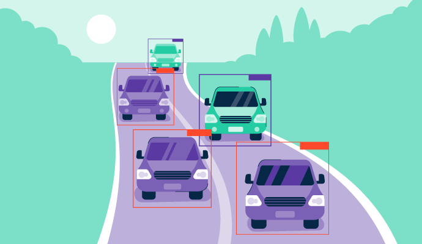

DeepLesion Analysis
This analysis is motivated by the study: DeepLesion: automated mining of large-scale lesion and universal lesion detection with deep learning. While this study makes use of image recognition techniques and unsupervised learning to detect lesions in the body, we build off of this study and utilize dimensionality reduction and clustering techniques to classify the lesions.
My role in this project focused on autoencoders, which is a neural network that learns the compressed representation of the data. I encode the data with the autoencoder and decode it again using certain features determined through feature selection. The results are then compared to see if reconstruction yields a similar result to original data.
Machine Learning Based Image Processing and Object Detection with Low Light Images
This is a machine learning project that utilizes the dataset to compare the effectiveness of different machine learning models and their ability to enhance low light images enough to accurately facilitate object detection models. We re-implmented two convolutional neural networks and trained them on the ExDark dataset in order to help the model learn how to effectively process and brighten images. We compared these models to LIME and EnlightenGAN and the resulting images can be seen in the github repository.

Image Inpainting
This project uses PyTorch to reimplement a U-Net with partial convolutions to carry out image inpainting on incomplete images. We created binary masks on a high resolution image dataset and trained the U-Net to learn how to fill in the images as accurately as possible